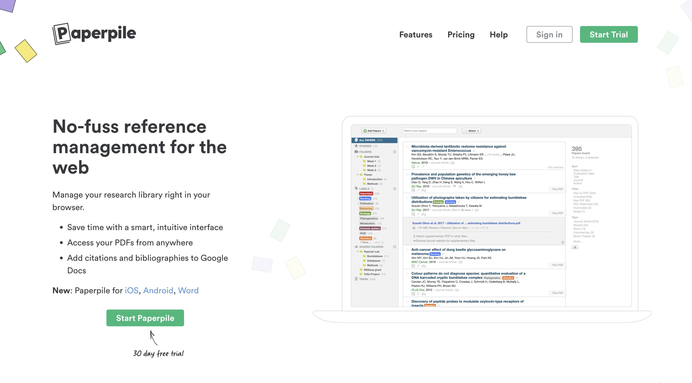
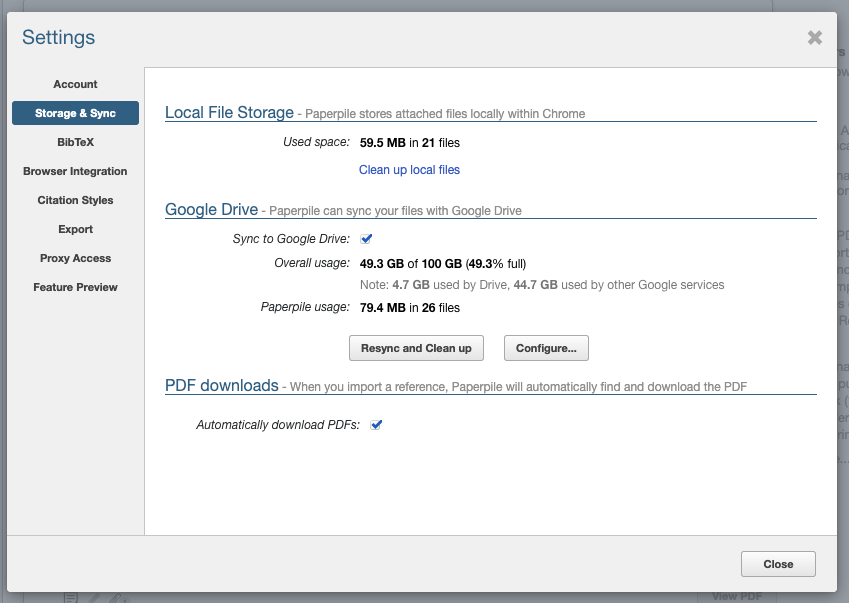

Words / posts / Just Blogging
Paperpile: a PDF manager with Google Drive backend
Paperpile is an online PDF manager that stores your personal data in your Google Drive folder.
I recently discovered it and found that it addresses the biggest issue I had with most of its competitors: the vendor lock-in problem.

Organizing papers, hello old friend
I recently started working on a new topic, collecting and organising academic papers to build a conceptual map of the area. So I began looking for a piece of software that could help with that task.
This problem is not new to me. In the past I've used a lot Mendeley, for this task, as well as its competitors Readcube and Papers. Frustrated by the lack of portability of these solutions, I even tried to roll out my own minimalist Python-based tool to search & index PDFs in combination with Apple's Preview PDF editor.
Paperpile stands out among its commercial competitors for one simple fact: there is no vendor lock-in. Your PDF library syncs directly to your Google Drive hence you can access your papers and annotations without limitations using any other software of choice.

Accessing your PDF library anytime, anywhere
My old Mendeley PDF collection slowly got out of sync with the backup copy I kept on my hard drive. New papers have been added locally, others got deleted or modified using other tools. I tried to import everything into it, and I tried moving to another PDF manager too, but I quickly realised that's a painful operation. Older annotations would be lost, new ones were going to be locked away in a proprietary reference manager database.
What a drag. This is the classic vendor lock-in effect, for PDF managers, I thought:
- Your personal PDFs collection ends up being stored in one system and you can't get it out of there easily e.g. if you change your mind or if the software becomes unavailable.
- Your annotations & highlights are available only within the PDF reader environment you used to create them.
Both aspects are pretty annoying. Hours of work go into reading papers and annotating them. So you don't want to discover after a few years that your hard work is behind a paywall, or, even worse, it's lost forever cause the app you were using is no longer in commerce.
Then recently I ran into Paperpile, an app founded in 2012 by three computational biologists. It costs 25$ a year, so it's not free like some of its competitors but admittedly it's not much either.
The best features Paperpile has, from my point of view:
- It syncs your PDF library with Google Drive
- All highlights and notes are directly saved to the PDF using open standards
- It has all the usual organising features e.g. tags and folders etc..
- It has all the usual sharing features e.g. shared folders etc..
- Integration with Google Docs
- It just works and it has beautiful iOS and Android apps you can download for free
Verdict
After about 3 months of regular use, I'm very happy about it. The iOS app is simple-yet-functional so I couldn't be asking for more. PDFs syncing with Drive works smoothly and on many occasions I simply pulled some PDFs from there without accessing the software.
So it's a thumbs up from me to the Paperpile team - keep up the good work!
Cite this post
Michele Pasin. Paperpile: a PDF manager with Google Drive backend. Blog post on www.michelepasin.org, 19 January 2023.
Talk back / comments via github